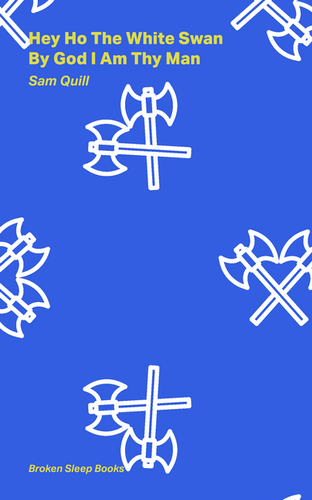

Sam Quill's published poetry includes:
‘Cleopatra’, a work commissioned for an anthology of poems on ‘Shakespeare’s Women’ (forthcoming with Broken Sleep Books, 2026).
‘She was so unlike him. She was so much like us’, commissioned for Anne-thology: Poems Re-Presenting Anne Shakespeare (Broken Sleep Books, 2023).
BUY HERE
Hey Ho The White Swan By God I Am Thy Man
(a pamphlet of poems, Broken Sleep Books, 2022).
BUY HERE
Hey Ho The White Swan By God I Am Thy Man is a culturally rich, beautifully furnished suite of poetry which recalls grand literary eccentrics like Beckett, Joyce and Gertrude Stein. Through classical scenes and moments of devilish intensity, Sam Quill writes with rare elegance and grace, in expectation of “the plants his ashes sow in heaven.”
— The Poetry Book Society
These beautiful poems do the most important thing — they risk something. There is something heroic about Quill’s utterly shameless love of language, brimming over, daring you to say that you’ve had your fill. Greedy in the best possible sense; for life, observed, pinned, transfigured and remade.
— Keiran Goddard, Votive, I See Buildings Fall Like Lightning
‘The Lost Decade’ and ‘The Ship of Theseus’ in Poetry Birmingham Literary Journal (Autumn/Winter, 2020).
'Damnatio Memoriae’, poem of the week on the London Review of Books Bookshop Blog (August 2020).
READ HERE
‘Coiner’ in BLACKBOX MANIFOLD (No. 24 (SUMMER 2020)).
READ HERE
Various poems in The Next Review (Aug-Sep 2016).
‘14 Sonnets’ in PN Review (May–June, 2016).
There was someone else I was getting excited about… Sam Quill. In the PN Review, he had 14 sonnets that are quite remarkable. He lives in South London and apparently these sonnets were his first in print which is exciting.
— Ian McMillan (poet and host of BBC Radio 3’s The Verb)